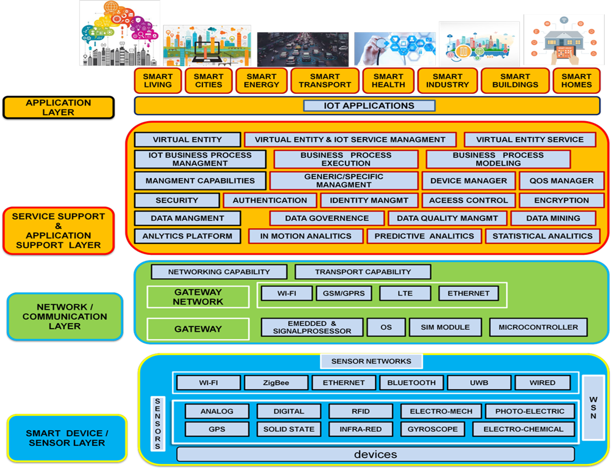
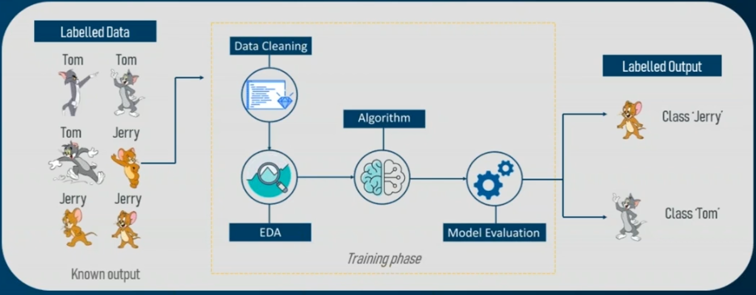
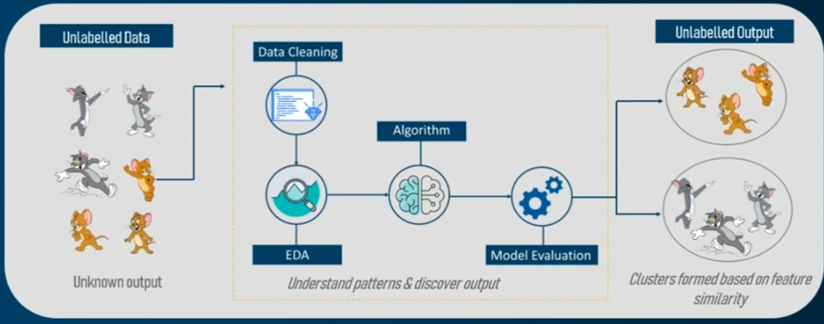
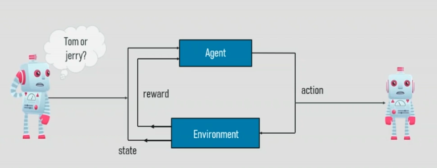
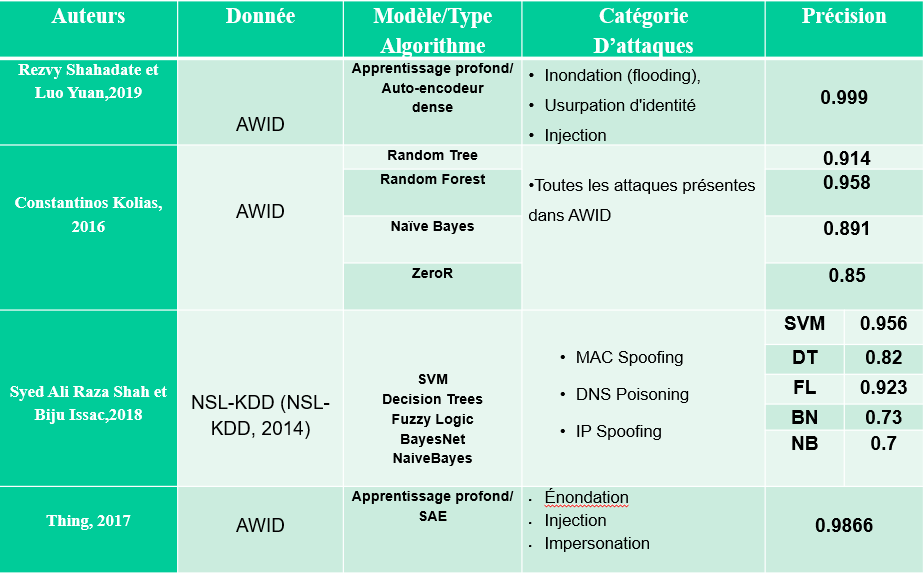
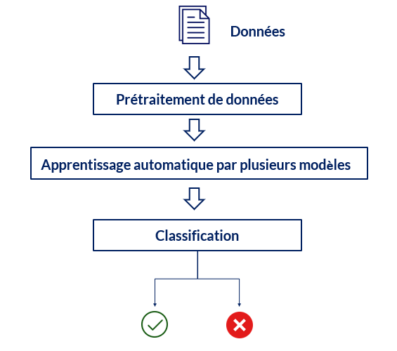
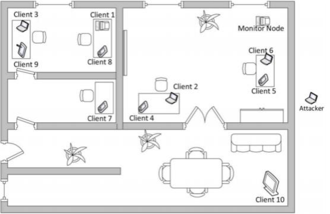
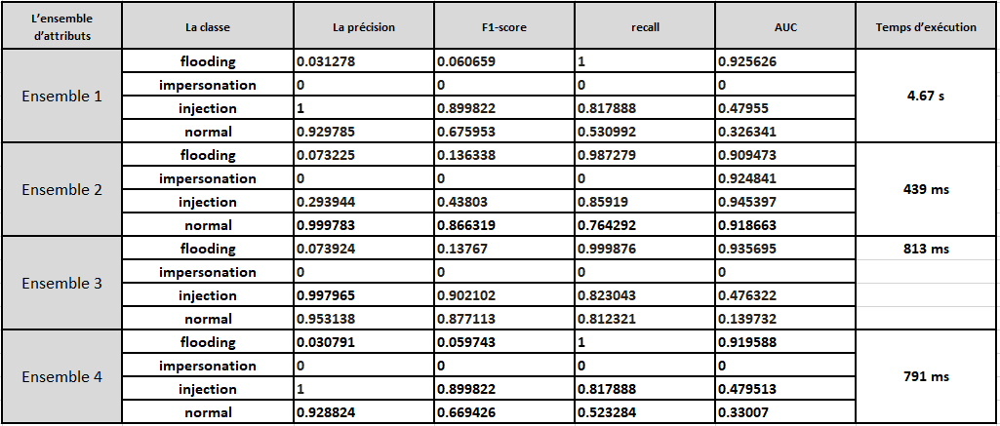
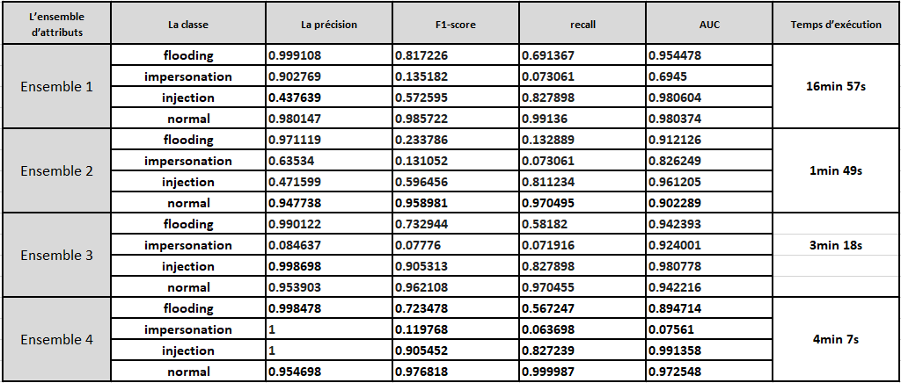

Projet de fin d’étude
Pour l’obtention du diplôme d’ingénieur d’Etat en Informatique
Ecole nationale supérieure d'informatique
Le 06/07/2020 ESI ex INI, AlgerApprentissage automatique pour la détection d’anomalies dans un réseau Iot
Réalisé par Mahamdi Mohammed
Encadré par Mme Meziani Leila
2019/2020
Le Plan
- Introduction (Contexe, Problématique, Objectifs)
- Iot
- Apprentissage automatique
- Sécurité de l'Iot
- Les travaux existants
- La solution proposé
- Conception et réalisation
- Résultats
- Interprétation des résultats
- Conclusion et perspectives
1. Introduction (contexe)
L’Internet des objets a pour objectif de permettre aux différents objets de se connecter n'importe quand, n'importe où en utilisant n'importe quel chemin et n'importe quel service. L’Internet n’a jamais connecté autant de systèmes informatiques qu’aujourd’hui, et le nombre des objets connectés est en croissance.
Ces objets n’intégrant que rarement des mécanismes de protection contre les attaques. Donc la sécurité de leurs utilisateurs, qu’ils soient des individus ou des entreprises est en menace.
1. Introduction (Problématique)
La mise en place d’une solution de sécurité applicable à l’ensemble des objets intelligents est très difficile à cause de variétés des protocoles, différence des capacités hardware et l’absence de mises à jour par les constructeurs dans la majorité des cas.
Les travaux effectués en termes de détection d’intrusion se concentrent essentiellement sur des analyses du flux réseau, puisqu’il n’y a pas besoin de considérer les ressources matérielles des objets ni même les applications qui sont exécutées dessus.
1. Introduction (Objectifs)
Afin de répondre à la problématique posée, une solution doit être proposée tout en répondant aux objectifs suivants :
- Comprendre les caractéristiques de l’écosystème des objets connectés.
- La mise en place d’un programme capable d’analyser le flux réseau en utilisant des techniques d’apprentissage automatique.
- Implémenter et optimiser divers algorithmes d’apprentissage machine pour la classification et la détection des attaques.
- Tester l’efficacité du mécanisme de sécurité proposé.
2. Iot
2. Iot: définition
Définition
infrastructure mondiale pour la société de l'information, qui permet de disposer de services évolués en interconnectant des objets.
- Union internationale des télécommunications
2. Iot: Les caractéristiques de L’Iot
Les caractéristiques de L’Iot
- Inter connectivité
- Hétérogénéité
- Le changement dynamiques
- L’énorme échelle
- Connectivité
- Sécurité
- Les services liés aux objets
2. Iot: L’Architecture de L’Iot
L’Architecture de L’Iot
2. Iot: Les technologies de L’Iot
Les technologies de L’Iot
- Les technologies qui permettent aux objets d’acquérir des connaissances contextuelles.
- Les technologies qui permettent aux ces objets de traiter ces informations.
- Les technologies pour améliorer sécurité et confidentialité.
3. apprentissage automatique
3. Apprentissage automatique
Intelligence artificiel Vs apprentissage automatique Vs apprentissage approfondie
3. Apprentissage automatique
Les types d’apprentissage
A. L'apprentissage supervisé
3. Apprentissage automatique
Les types d’apprentissage
B. L'apprentissage non-supervisé
3. Apprentissage automatique
Les types d’apprentissage
C. L'apprentissage par renforcement
4. Sécurité de l'Iot
Les anomalies existants dans les réseaux Iot
- Deauthentication, Disassociation
- Authentication Request Flooding Attack
- Fake Power Saving
- CTS Flooding
- RTS Flooding
- Probe Request Flooding
- Probe Response Flooding
- Evil twin
- Rogue Access Point
4. Sécurité de l'Iot
Les contres mesures
- Antivirus
- Pare-feu
- Les IDS
5. Les travaux existants
5. La solution proposé
Architecture globale
5. La solution proposé
Les algorithmes d’apprentissage
- Naive Bayes
- Random Forest
- XGBoost
6. Conception et réalisation
Présentation de la base de données
AWID (AEGEAN WI-FI INTRUSION)DATASET
AWID site web

6. Conception et réalisation
Environnement de collecte de données du dataset AWID
6. Conception et réalisation
Le nombre d’enregistrement pour chaque classe dans AWID-CLS-R| La classe | Nombre d’enregistrement dans AWID-CLS-R-Trn | Nombre d’enregistrement dans AWID-CLS-R-Tst |
|---|---|---|
| Flooding | 48484 (2.7 %) | 8097 (1.407 %) |
| Impersonation | 48522 (2.702 %) | 20079 (3.488 %) |
| Injection | 65379 (3.641 %) | 16682 (2.898 %) |
| Normal | 1633190 (90.956 %) | 530785 (92.207 %) |
6. Conception et réalisation
Sélection d'attributs
Pour réduir la dimension du données, et accelerer la classification, on choisi 4 ensembles
| L'ensemble | La dimension | Comment il a construit |
|---|---|---|
| Ensemble 1 | 153 | En prenant toutes les colonnes sauf celle qui ont un taux de valeur manquant égale à 1. |
| Ensemble 2 | 9 | En choisissant les 9 plus importantes colonnes dans le modelé généré par l’algorithme Random Forest avec un seul estimateur. |
| Ensemble 3 | 21 | En choisissant les 21 plus importantes colonnes dans le modelé générer par l’algorithme Random Forest avec 100 estimateurs. |
| Ensemble 4 | 18 | En choisissant les colonnes qui ont une importance plus de 0.03 dans le modelé générer par l’algorithme Random Forest avec 200 estimateurs |
6. Conception et réalisation
Environnement technique
7. Résultats
Métriques d'évaluation
Nous avons choisi les mesures d'évaluation suivants :
- La précision
- F1-score
- Recall
- AUC
7. Résultats
Random Forest

7. Résultats
Random Forest : ROC


7. Résultats
Naive-bayes
7. Résultats
Naive-bayes : ROC


7. Résultats
XgBoost
7. Résultats
XGBoost : ROC


7. Résultats
ROC de tous les algorithme

7. Résultats
Autres résultats
L'algorithme KNN ne produit pas de bons résultats
L'exécution de l'algorithme SVM est très longue.(plus de 5 heures)
8. Interprétation des résultats
- Il est clair que l'ensemble 4 est le sous-ensemble de fonctionnalités le plus important, il donne presque les mêmes résultats que l'ensemble de tous les attributs.
- L'algorithme NaiveBayes ne prédit pas l'attaque de type impersonation, et sa précision de détecter l'attaque flooding est très faible.
- Les deux algorithmes RF et XGboost donnent des résultats similaires.
- Les deux algorithmes RF et XGboost détectent les deux catégories : le flux normal et l'attaque impersonation avec une précision de 1.
8. Interprétation des résultats
- L'algorithme RF produit une bonne séparation entres les classes (la valeur de AUC est supérieure à 0.96 pour trois classes).
- Avec la métrique recall, le Classifieur RF bien classifier le flux normal comme un flux normale avec une Précisons de 99.9999 %.
- Vu que les faux positifs et les faux négatifs ont un coût similaire donc La précision fonctionne mieux comme une métrique d'évaluation, Donc comme résultat final de ce projet, l’algorithme Random Forest est le meilleur algorithme pour la classification des attaques dans le dataset AWID.
Conclusion et perspectives
Réponse à la problématique
* Nous avons réalisé des modèles basés sur d’apprentissage machine pour la classification et la
détection des attaques. Une comparaison de ces modèles en termes d'efficacité est fournie pour
sélectionner la meilleure approche pour résoudre la problématique.
* D'après les tests, le classifieur Random Forest donne de très bons résultats.
Conclusion et perspectives
Perspectives
Plusieurs perspectives d’évolution peuvent être envisagées, le travail réalisé peut être complété et amélioré en ajoutant les fonctionnalités suivantes :
- Entrainer les modèles sur un dataset qui contient plusieurs catégories d’attaques.
- Implémenter cette solution sur un IDS pour assurer une détection d’intrusions en temps réel.